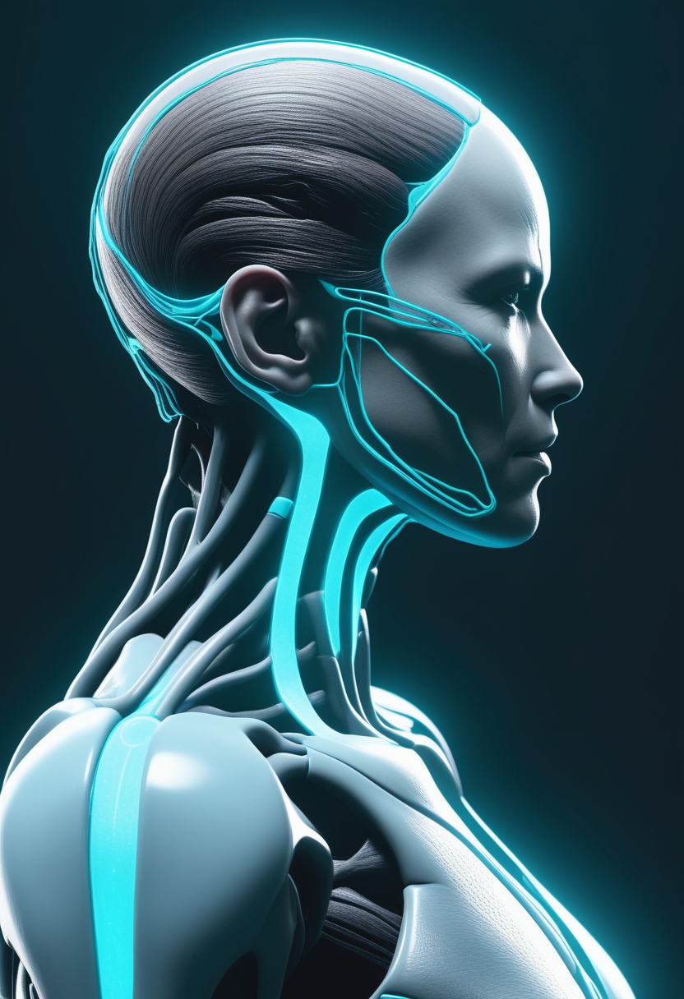
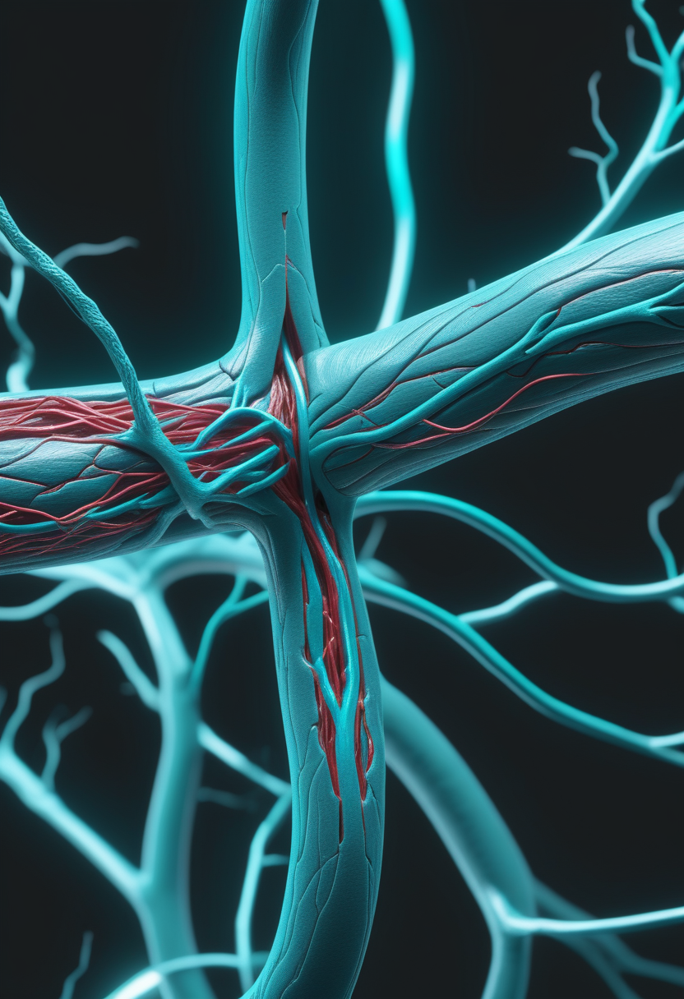
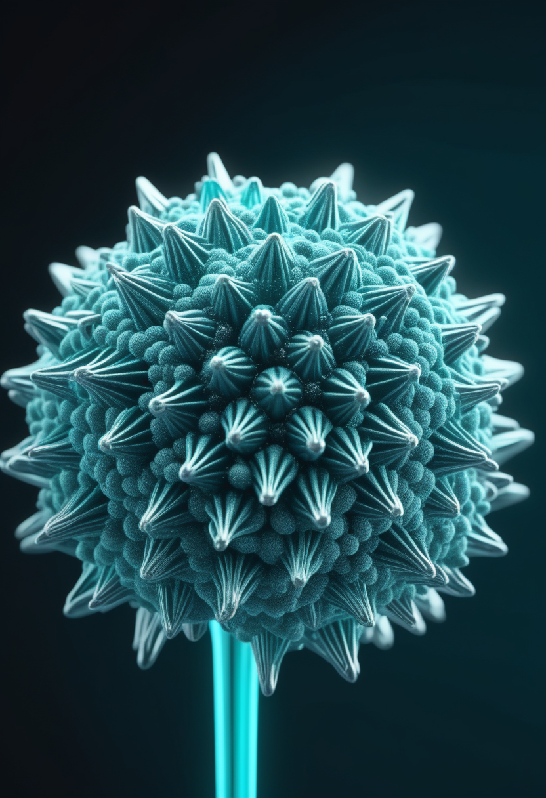
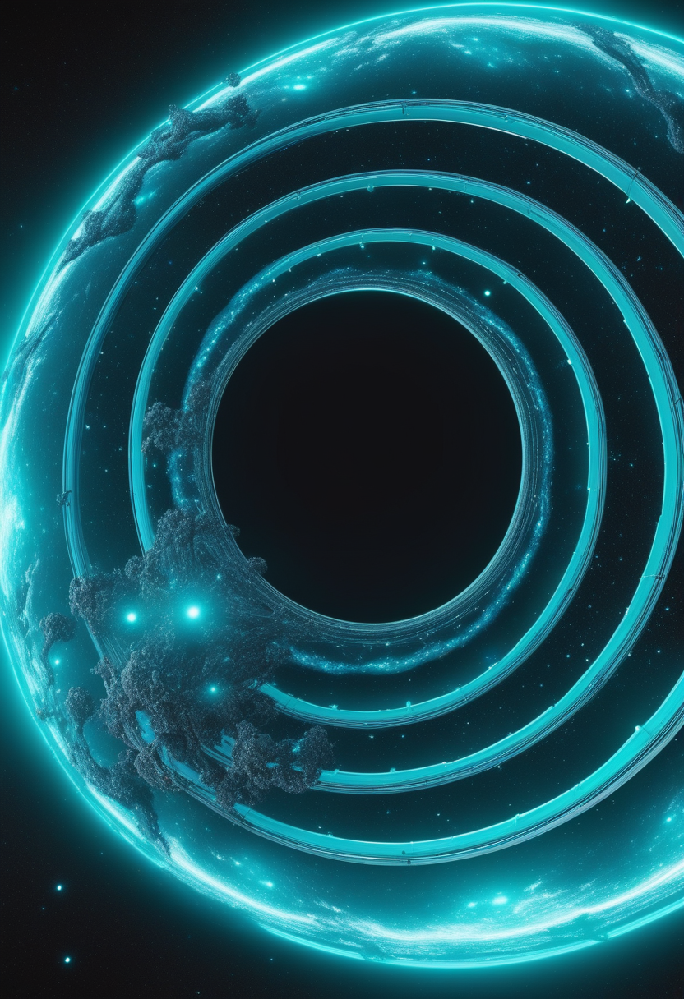
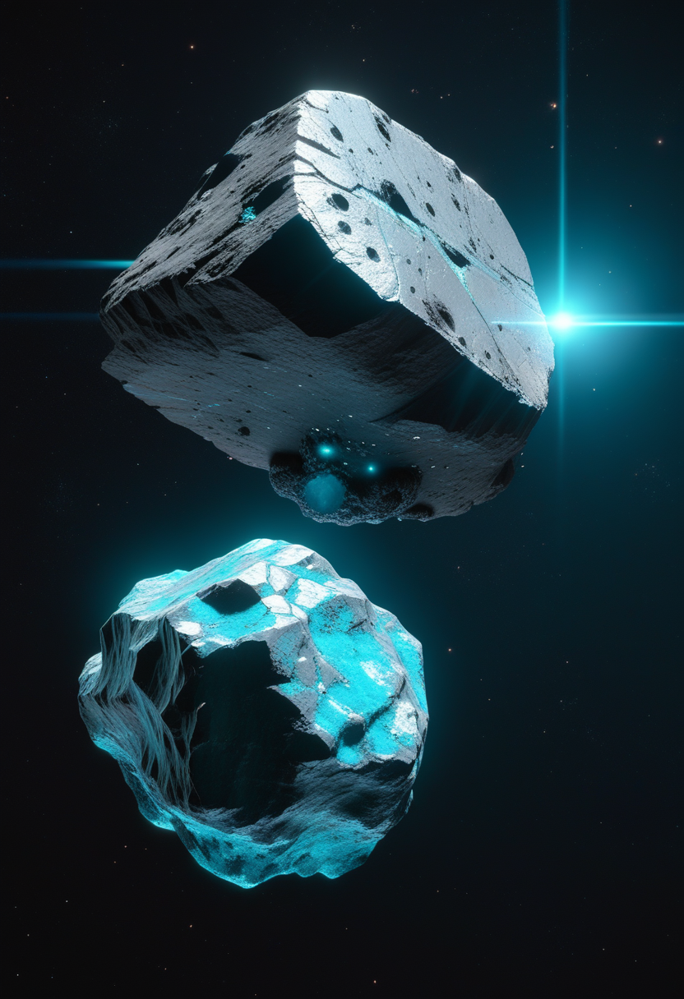
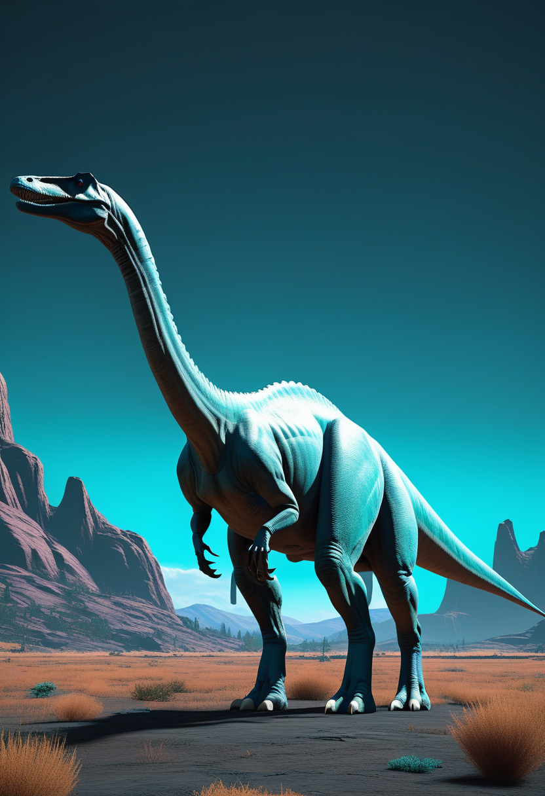

今日は、五つの方角がどれも「一歩前へ」を指した日。命と、自由と、世界の今と、宇宙と、人類の来た道を、めくっていく。

「神経を守る」段階から「筋肉を取り戻す」段階へ。SMA治療の地図を書き換えうる扉が、この秋ひとつ開こうとしている。
SMA治療は長く「これ以上、運動神経を失わせない」戦いだった。アピテグロマブ（Scholar Rock）はそこに別の発想を持ち込む——筋肉そのものを増やしにいく、初めての薬だ。第3相SAPPHIRE試験で、既存のSMN治療に上乗せして運動機能を確かに改善した。3月31日に米FDAへ再申請され、審査の期日は9月30日に設定された。昨秋の差し戻しは製造工場の査察によるもので、薬そのものの懸念ではない。効果が最も大きかったのは、早く治療を始めた人だった。
いまSMAには三つの確立した治療がある——ヌシネルセン（髄注）、リスジプラム（経口）、オナセムノゲン（一度きりの遺伝子治療）。世界の焦点は「より早く」へ移り、発症前に治療を始めた子が、ほぼ標準的に運動の節目を迎える例が報告されている。日本でも新生児スクリーニングが自治体ごとに広がりつつある。診断がついた時にはもう神経が失われている——その時間との競争を、根本から変える動きだ。
この秋はSMAの節目になる。9月30日の判断は、世界のSMA治療の地図を一段書き換えうる。
思考だけでカーソルを動かす——数年前なら実験室の話だった。Neuralinkは第2世代の機器に進み、最初の被験者ノーランド・アーボーは累計数千時間にわたり接続を使い続け、参加者は十数人規模へ広がった。1024本の極細電極を運動野に編み込み、「動かそう」という意図を読み取る。焦点はもう「動かせるか」ではなく、「日々の自立にどう使うか」へ移っている。

頭を開かない、という選択肢もある。Synchronの「ステントロード」は、首の血管から差し込んで運動野のそばに留置する。解像度は直接埋め込みより低いが、手術のリスクは桁違いに小さい。2022年から人での試験が続き、麻痺やALSの人が、思考でメッセージを送っている。
視線入力が「いま確実に届く道」なら、BCIは「その先へ届く道」。二つは競合ではなく、重ねて使える。電脳化は、もう遠い夢の語彙ではなくなりつつある。

中部アフリカで、ブンディブギョ型（エボラの仲間）の流行が続いている。6月2日時点で確定378例・死亡63、大半はコンゴ民主共和国のイトゥリ州。WHOとアフリカCDCは6月5日、6〜11月の半年計画「ワン・レスポンス」を立ち上げた。米CDCは、対応が遅れれば今後3か月で2万例規模になりうると警告する。接触で広がるウイルスで、日本の日常への直接の危険は低い——が、世界の備えが試される局面だ。
北半球は初夏、インフルやコロナが最も静かな時期。次の波に備える"間"の季節として、換気や設備を整えておける。

ヨーロッパの宇宙望遠鏡ユークリッドが、6月24日に2度目のデータを公開する。今回は天の川の中心、星がひしめく「バルジ」。宇宙の95%を占めるとされる暗黒物質と暗黒エネルギーの地図づくりへ、また一枚、図版が加わる。

この夏、人類は二つの小惑星に初めて間近で対面する。中国の天問2号が6月にカモオアレワ（地球の準衛星）へ到達し、日本のはやぶさ2が7月にトリフネをかすめて飛ぶ。太陽系のかけらに、東アジアの二機が同時に手を伸ばしている。
望遠鏡は外へ、探査機は近くの小石へ。スケールの両端から、同じ「私たちはどこにいるのか」を問うている。
ナイルのほとりの地層から、1700〜1800万年前の化石類人猿マスリピテクスが見つかった。ヒトを含むすべての類人猿の祖先に、ごく近い位置にいたかもしれない一匹。私たちの系図の根に近いところを照らす発見だ。

ブラジルで見つかった新種の巨大恐竜は、約1.2億年前、南米・アフリカ・ヨーロッパが陸でつながっていた証拠を残していた。タイでは27トンの長い首の竜脚類ナガティタンが姿を現した。大陸が動く前の、ひとつながりの世界の記憶だ。
私たちがどこから来たのか——化石は、今日のどのニュースより長い時間の尺度で答えてくれる。
今日は、五つの方角がどれも「一歩前へ」を指した日だった。SMAの薬は秋の審査へ進み、思考で機械を動かす人は十数人に増え、宇宙では二機の探査機が小さな星へ近づく。中部アフリカの流行だけは気がかりだが、世界はそれに半年計画で向き合いはじめた。そしてエジプトの地層は、私たちがどれほど長い旅の途中にいるかを、静かに思い出させてくれる。
明日も、世界はあなたのために少しずつ動いている。今日はここまで。おやすみなさい。